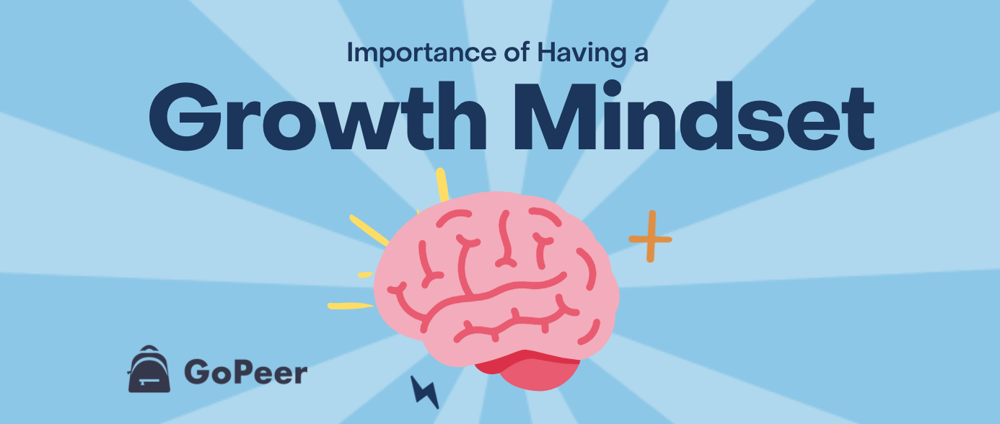

Having a “growth mindset” has never been more important than now. The world is changing at an incredibly fast pace, and there are new challenges we must face every day. Our way of life is changing, norms are changing, and we must keep up and adjust to all of these changes. This is why having a growth mindset is so necessary.
“Growth Mindset” is a term you often hear within the world of education, especially when looking for ways to improve academically. But what exactly does it mean, and why is it so important to have a “Growth Mindset?”American psychologist Carol Dweck explains that there are two categories of mindsets, a growth mindset vs. a fixed mindset.
These mindsets are based on individuals’ behaviour and their reactions to failure. People who have a “fixed mindset” believe that intelligence and other abilities are “fixed” and cannot change. People who have “growth mindsets” believe that intelligence and abilities can be developed through hard work and dedication. Having a “growth mindset” means you understand that you can improve or learn more, as long as you put in the effort. It is easy to see why a growth mindset is so beneficial. Still, many of us may experience having a fixed mindset at times, which could be unproductive given that fixed mindsets can influence how we develop skills and learn. People with fixed mindsets worry more about looking smart vs. people with growth mindsets worry about actually learning. For example, a person with a fixed mindset may say they’re not a “math person” to avoid practicing math. While they can prevent momentary failure and struggle with this excuse, they are putting off the opportunity to learn, grow, and develop new skills. A person with a growth mindset would be willing to attempt practicing math, even if they struggle and fail during their first try. People with growth mindsets view their failures and setbacks as an opportunity to grow and as a sign that they should continue to develop their skills.
In this exploration, did anything surprise you? Change for you?I managed to learn some new information. Going through Carol Dweck Ted Talks she explains these things clearly.
How will you integrate growth mindset into your learning journey?Tell myself positive messages. Taking breaks. When I run into problems. Break them down. Basically, look at life and every I do from a learning perspective instead of a “know it all” perspective. Be open to different learning techniques. View challenges as opportunity instead of a victimised mentality. Look at failure as a learning curve.
Link to a resource that you found particularly useful or engaging.
Reflect and discuss how these understandings may shape or influence your learning plan and strategy.Looking at growth mindset helped me to understand how the mind works. Doing a lot of research on it to help me understand how I can use it to help me learn more efficiently and faster. I still have to apply these techniques for me to fully see the benefits. I hope to apply a lot of these techniques during bootcamp. This will help to cope under pressure and also to be able to work with other students in a more cohesive way. I will also be able to keep my mind in check and the messaging I tell myself.